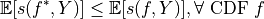
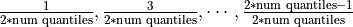

Tutorial 1.a: Representing and Evaluating Uncertainty for Regression
This tutorial is the first in a series of tutorials on using torchuq for uncertainty quantification. If you haven’t already, you can read the Introduction to understand the overall flow and objective of these tutorials.
Before we start to work with any predictions we must first think about how to represent our prediction. For example, when predicting the price of a house, we might want to represent it as a single number (point prediction), such as 120k dollars, or we might want to represent it as a cumulative density function (CDF). Each representation has its pros and cons. Depending on the different requirements during training/deployment, we might even want to convert between different representations. For example, we might initially start from an ensemble prediction (i.e. a set of predictions) possibly because we trained multiple prediction models, then convert it into a cumulative density function prediction or a point prediction (which are more interpretable and easier to work with). Conversion is one of the main features of torchuq, and we will come back to this topic in a later tutorial.
This notebook aims to introduce some of the popular representations for regression, and metrics to measure the quality of the prediction. We first list the types of predictions currently supported by torchuq for regression. You can skip this part and come back later as a reference.
Name |
Variable type/shape |
Special requirement |
torchuq sub-mod ule for evaluat ion |
|---|---|---|---|
Point |
|
|
|
Distribution |
Python class that
behaves like
|
|
|
Interval |
|
``torch uq.eval uate.in terval` ` |
|
Quantile |
|
The quantiles
should be
sorted,
e.g. predicti
on[i,
j]
|
``torch uq.eval uate.qu antile` ` |
Particle |
|
``torch uq.eval uate.pa rticle` ` |
|
Ensemble |
|
name must start with prediction type and a string (with no special characters), such as ‘point_1’ |
Not availab le |
 prediction[i,
j+1]
prediction[i,
j+1]Torchuq uses mandatory batching. For example, a point prediction
variable (which is an array with shape [batch_size]) represents a
sequence of predictions on a dataset with batch_size many samples.
Even if the dataset only contains 1 sample (i.e. batch_size=1), the
predictions must be an array of shape [1] rather than a scalar.
Running example
As a running example we will predict the housing prices on the Boston housing prices dataset. For convenience, we have pretrained a set of predictions. In the next chapters we will see how to use torchuq to learn these predictions from data (hint: it only takes a few lines of code). But for now let’s just load the pretrained predictions for visualization.
import torch
from matplotlib import pyplot as plt
# Make sure that the torchuq package is in PYTHONPATH
# If you are running this notebook in the original directory as in the repo, then the following statement should work
import sys
sys.path.append('../..') # Include the directory that contains the torchuq package
reader = torch.load('pretrained/boston_pretrained.tar') # Load the pretrained predictions
labels = reader['labels'] # Load the true label (i.e. the ground truth housing prices)
1. Point Predictions
Point prediction is the simplest type of prediction, where we use a single number to represent the prediction. Point predictions are widespread because of their simplicity — a single number is easy to communicate and interpret. However, point predictions do not represent the uncertainty in the prediction.
A point prediction is represented by an torch array of shape
[batch_size]. Here we load the pretrained point prediction and print
its shape.
predictions_point = reader['predictions_point']
print(predictions_point.shape)
torch.Size([101])
There are many ways to visualize or measure the quality of a point prediction. Here we explain several common ones.
Scatter plot visualizes the relationship between the prediction and
the label. On the x-axis we plot the predicted value, and on the y-axis
we plot the true label. If the prediction is perfect, then all points
should lie on the diagonal line (i.e. predicted value = true label). In
torchuq this is accomlished by the plot_scatter function.
from torchuq.evaluate import point # All point prediction metrics and visualizations are included in the torchuq.metric.point sub-package.
point.plot_scatter(predictions_point, labels);
Scoring Rules The classic way to evaluate a point prediction is to compute scoring rules [1].
A Detour into the Theory of Scoring Rules
Suppose we make a prediction
and observe true label
. How do we quantitatively evaluate how good or bad the prediction is? A function that evaluates prediction quality is usually called a scoring rule
, which is a map
. An example scoring rule is the L2 score: . Intuitively, a high score indicates a poor prediction, and a low score indicates a good prediction. However, the exact meaning of good vs. poor prediction is ambiguous. The key issue is that a point prediction is never “perfect” if there is any uncertainty. If we predict
To resolve the ambiguity we can specify the prediction target [1]. For example, we can aim to predict the mean, and design a scoring function that is small (i.e. indicates a good prediction) if the prediction
i.e. no prediction
Functional
Scoring rule
Mean
L2 score
Median
MAE score
-quantile
Pinball/hinge score
Unnamed
Huber loss
For example, the typical L2 loss used in most regression problems elicit the mean functional. In other words, it rewards a prediction

In torchuq common scoring rules are implemented with the
compute_scores function. This function returns a dictionary with
many common scores.
scores = point.compute_scores(predictions_point, labels)
print(scores)
{'L2': tensor(0.1933), 'Huber': tensor(0.0591), 'pinball_0.1': tensor(0.1191), 'pinball_0.2': tensor(0.1244), 'pinball_0.3': tensor(0.1298), 'pinball_0.4': tensor(0.1351), 'pinball_0.5': tensor(0.1404), 'pinball_0.6': tensor(0.1457), 'pinball_0.7': tensor(0.1510), 'pinball_0.8': tensor(0.1563), 'pinball_0.9': tensor(0.1616), 'MAE': tensor(0.1404)}
2. Distribution Predictions
A distribution prediction is a cumulative distribution function (CDF)
over the label, i.e. it is a function ![f: \mathbb{R} \to [0, 1]](../../_images/math/ec1e16f8d553fd1aeb98e833ba3dce859047b7af.png) that is monotonic and upward continuous. Ideally, a distribution
prediction
that is monotonic and upward continuous. Ideally, a distribution
prediction  should predict the true probability
should predict the true probability ![f(c) =
\text{Pr}[Y \leq c], \forall c](../../_images/math/a17724605600a6196cb69ac628053d03b69a83c9.png) although this is
usually very difficult to achieve exactly [2,3]. Distribution
predictions are very informative. For example, if we want to predict the
price of a house, then a CDF prediction would specify the (predicted)
probability of each possible price value.
although this is
usually very difficult to achieve exactly [2,3]. Distribution
predictions are very informative. For example, if we want to predict the
price of a house, then a CDF prediction would specify the (predicted)
probability of each possible price value.
Torchuq inherits the pytorch interface for representing a distribution, i.e. a distribution prediction is represented by any class that inherits the torch.distributions.distribution.Distribution interface. Duck typing is also supported (i.e. the class only has to behave like torch.distributions.distribution.Distribution). Here we load the pretrained distribution prediction and verify that it has the correct type.
predictions_distribution = reader['predictions_distribution']
print(predictions_distribution)
print(type(predictions_distribution))
Normal(loc: torch.Size([101]), scale: torch.Size([101]))
<class 'torch.distributions.normal.Normal'>
There are several metrics and visualizations available for distribution predictions:
Density Visualization A way to intuitively visualize a distribution
prediction is to visualize its probability density
function
(when it exists). In torchuq this is achieved by
distribution.plot_density_sequence which takes as input a batch of
distribution predictions, and plots the density for each prediction. The
x-axis is the index of the prediction in the batch.
CDF Visualization We can also visualize the cumulative density
function (CDF) of the distribution prediction. This is particularly
useful when density visualzation fails. For example, not all
distributions have a density because the CDF could be dis-continnuous.
In torchuq, visualizing the CDF is accomplished by the
distribution.plot_cdf_sequence function.
from torchuq.evaluate import distribution # All distribution prediction metrics and visualizations are included in the torchuq.metric.point sub-package.
# Pass in the optional argument "labels" to plot the true labels in the same diagram
# max_count is the maximum number of distributions to plot. Set a reasonable number (such as 50-100) to avoid cluttering the visualization.
distribution.plot_density_sequence(predictions_distribution, labels, max_count=50)
distribution.plot_cdf_sequence(predictions_distribution, labels, max_count=25);
Scoring Rules To evaluate the quality of distribution predictions, we can use proper scoring rules.
Another Detour into the Theory of Scoring Rules
Let
be the true CDF of

In other words, no CDF can achieve a smaller score than the true CDF
There are many common proper scoring rules. Two commonly used scoring rules are
The negative log likelihood (NLL), defined by . Log likelihood is only defined when
The continuous ranked probability score (CRPS), defined by . Unlike NLL, CRPS is defined even when
In torchuq, scoring rules are implemented by functions such as
distribution.compute_crps or distribution.compute_nll. If the
score is not defined then these functions will return nan.
crps = distribution.compute_crps(predictions_distribution, labels).mean()
nll = distribution.compute_nll(predictions_distribution, labels).mean()
print("CRPS score is %.4f, nll score is %.4f " % (crps, nll))
CRPS score is 0.2276, nll score is 2.5124
The following code demonstrates the fact that CRPS/NLL are proper scoring rules. If we try to predict a less accurate distribution (for example by intentionally shifting the predicted distribution), then the CRPS/NLL score will increase.
# Try computing the crps for a worse predictive distribution
import copy
bad_prediction = copy.deepcopy(predictions_distribution)
bad_prediction.loc += 0.5
crps = distribution.compute_crps(bad_prediction, labels).mean()
nll = distribution.compute_nll(bad_prediction, labels).mean()
print("CRPS score is %.4f, nll score is %.4f " % (crps, nll))
CRPS score is 0.4767, nll score is 18.2165
Reliability Diagram and Calibration An important property for
distribution prediction is (probabilistic) calibration [4, 5]. The idea
behind calibration is that a probabilistic prediction should reflect the
true distribution; for instance, 90% of the labels should be below the
predicted 90% quantile. Formally let  be the random variable
that denotes our prediction. (Notation clarification: in the previous
discussion, we use to denote a single distribution prediction;
however it is only meaningful to talk about probabilistic calibration
for a set/batch of predictions. Here we should think of a
randomly selected prediction from the set/batch, and is the
label associated with the selected prediction.) Perfect probabilistic
calibration is defined by
be the random variable
that denotes our prediction. (Notation clarification: in the previous
discussion, we use to denote a single distribution prediction;
however it is only meaningful to talk about probabilistic calibration
for a set/batch of predictions. Here we should think of a
randomly selected prediction from the set/batch, and is the
label associated with the selected prediction.) Perfect probabilistic
calibration is defined by
Probabilitic calibration is only one of many calibration properties for distribution predictions. For additional calibration notions see [2].
To measure probabilistic calibration we can compute the deviation from perfect probabilistic calibration. There are two typical tools
ECE metrics measures the average difference between the left hand side (LHS) and the right hand side (RHS) of equation above.
Reliability diagram plots the map from . If the predictor is perfectly calibrated, then the map should be the identity map. In torchuq use
distribution.plot_reliability_diagramto plot the reliability diagram. Because of statistical fluctuations, a predictor that is perfectly probabilistically calibrated (on the entire population, or given infinite data) might be uncalibrated on a finite dataset. Torchuq will also automatically compute the 99% confidence interval. If the recalibration diagram falls outside the confidence interval, then it very likely that the predictor is not calibrated on the entire population either.
# ECE estimation is biased, if you enable the debiased option, then the expected ECE will be 0 for a perfectly calibrated predictor
ece = distribution.compute_ece(predictions_distribution, labels, debiased=True)
print("Debiased ECE is %.3f" % ece)
distribution.plot_reliability_diagram(predictions_distribution, labels);
Debiased ECE is 0.069
From the above ECE and reliability diagram, we can see that the predictions are not calibrated. We will discuss recalibration in a future tutorial.
3. Interval Predictions
There are situations where some uncertainty quantification is needed
(hence a point prediction is insuffient), but we do not want to learn a
full cumulative distribution function. An interval prediction is a good
intermediate representation that can quantify uncertainty but is not too
complex. An interval prediction consists of a lower bound and an upper
bound (denote by  ,
,  ). For example, an interval
prediction can be “the price is between 120k and 150k. Such simple
predictions are often easier to visualize and communicate to the general
public.
). For example, an interval
prediction can be “the price is between 120k and 150k. Such simple
predictions are often easier to visualize and communicate to the general
public.
We say that an interval is valid if and say that a
(batch) of interval predictions have  -coverage if
proportion of the intervals are valid.
-coverage if
proportion of the intervals are valid.
In torchuq, interval predictions are represented as an array of shape
[batch_size, 2] where prediction[i, 0] denotes the lower bound
of the  -th prediction and
-th prediction and prediction[i, 1] denotes the
upper bound of the -th prediction. Here we load the example
interval prediction and verify that it has the right shape.
predictions_interval = reader['prediction_interval']
print(predictions_interval.shape)
torch.Size([101, 2])
Direct Visualization We provide a function to directly visualize an interval prediction. The different colors indicate whether the interval prediction is valid or not (i.e. if the label belongs to the predicted interval).
from torchuq.evaluate import interval
interval.plot_interval_sequence(predictions_interval, labels)
<AxesSubplot:xlabel='sample index', ylabel='label value'>
Length and Coverage Two important metrics for (a batch of) interval
predictions are its length and coverage. You can use the function
compute_length and compute_coverage to compute the average
length and coverage.
We can also plot the distribution of the lengths, i.e. we might want to
know how many proportion of the intervals have a size that’s less than
0.3, 0.5, etc. This can be accomlished by the function
plot_length_cdf.
length = interval.compute_length(predictions_interval)
coverage = interval.compute_coverage(predictions_interval, labels)
print("Length is %.3f, coverage is %.3f" % (length, coverage))
interval.plot_length_cdf(predictions_interval);
Length is 0.549, coverage is 0.624
4. Quantile Predictions
Similar to interval predictions, quantile predictions are most useful when some uncertainty quantification is needed (hence a point prediction is insuffient), but we do not want to learn a full cumulative distribution function. An example quantile prediction is: “There is 10% chance that the housing price is less than 120k, and 90% chance that it’s less than 150k.
In torchuq a quantile prediction is represented as an array of shape
[batch_size, num_quantiles, 2] where prediction[:, :, 0] is the
quantiles values (e.g. 120k, 150k), and prediction[:, :, 1] is
the quantile probability (e.g. 10%, 90%). For example, to represent
our example price prediction, we can use an array prediction of
shape [1, 2, 2], and set
prediction[0, 0, 0] = 120k, prediction[0, 0, 1] = 0.1, prediction[0, 1, 0] = 150k, prediction[0, 1, 1] = 0.9.
Again, we use mandatory batching, the batch dimension is necessary even
if batch_size=1 in this example.
As a convenient shorthand, we can drop the quantile probabilities, and
represent a quantile prediction as an array of shape
[batch_size, num_quantiles] (only the quantile values are
specified). The quantile probabilities are defined implicitly by the
shape of the array (i.e. the value of num_quantiles). It is
implicitly defined as
.
For example, if num_quantiles=10 then the quantile probabilities are
implicitly defined as .
Here we load the pretrained quantile predictions and verify that it has
the correct shape. We use the implicit representation (with shape
[batch_size, num_quantiles]).
predictions_quantile = reader['predictions_quantile']
print(predictions_quantile.shape) # Here the quantiles are implicitly defined
torch.Size([101, 10])
There are several metrics and visualizations available for quantile predictions:
Quantile Visualization We can directly plot the quantile
predictions. Torchuq provides a function
quantile.plot_quantile_sequence where the different quantile
probabilities are rendered in different color. For example, in the plot
below the red colors are the upper quantiles (e.g. 95%) quantile, and
the blue colors are the lower quantiles (e.g. 5% quantile). If the true
label is also provided, it is plotted as green crosses. The x-axis is
the index of the samples (e.g. predictions[0], predictions[1],
 ).
).
from torchuq.evaluate import quantile
quantile.plot_quantile_sequence(predictions_quantile, labels);
Quantile calibration Similar to a CDF prediction, a quantile
prediction should also satisfy calibration, e.g. 90% of the labels
should be below the predicted 90% quantile. The quantile calibration
diagram is almost the same as the reliability diagram (for distribution
predictions). In torchuq we can plot a quantile calibration diagram by
quantile.plot_quantile_calibration.
quantile.plot_quantile_calibration(predictions_quantile, labels)
<AxesSubplot:xlabel='target quantiles', ylabel='actual quantiles'>
In this case, the prediction is not calibrated. For example, the bottom-left dot shows that about 20% of the labels are below the 5% predicted quantile. We will discuss calibrating quantiles in a later tutorial.
Scoring rules Similar to other types of predictions we discussed above, quantile predictions also have (proper) scoring rules. Intuitively a proper scoring rule should be small if the predicted quantile value equals the true quantile value, and large otherwise. For quantile predictions, a very important proper scoring rule is the pinball loss (also called the hinge loss).
The following is an example of the pinball loss implemented in torchuq.
pinball = quantile.compute_pinball_loss(predictions_quantile, labels).mean()
print("Pinball loss is %.3f" % pinball)
Pinball loss is 0.111
References
[1] Gneiting, Tilmann. “Making and evaluating point forecasts.” Journal of the American Statistical Association 106, no. 494 (2011): 746-762.
[2] Vovk, Vladimir, Alex Gammerman, and Glenn Shafer. Algorithmic learning in a random world. Springer Science & Business Media, 2005.
[3] Zhao, Shengjia, Tengyu Ma, and Stefano Ermon. “Individual calibration with randomized forecasting.” In International Conference on Machine Learning, pp. 11387-11397. PMLR, 2020.
[4] Gneiting, Tilmann, and Matthias Katzfuss. “Probabilistic forecasting.” Annual Review of Statistics and Its Application 1 (2014): 125-151.
[5] Kuleshov, Volodymyr, Nathan Fenner, and Stefano Ermon. “Accurate uncertainties for deep learning using calibrated regression.” In International Conference on Machine Learning, pp. 2796-2804. PMLR, 2018.